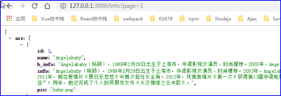
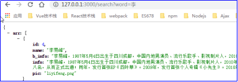
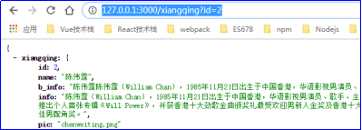
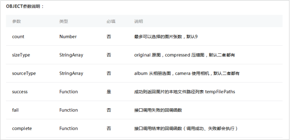
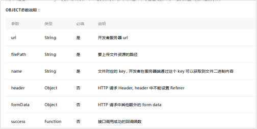

原文连接:https://www.cnblogs.com/rope/p/10750558.html
一、信息流小程序-GET请求案例
1.1服务端接口开发
一定要养成接口的意识，前端单打独斗出不来任何效果，必须有接口配合，写一个带有分页、关键词查询的接口：
分页接口：http://127.0.0.1:3000/info?page=1
查询接口：http://127.0.0.1:3000/search?word=李
详情接口：http://127.0.0.1:3000/xiangqing?id=2
const express = require("express");
const app = express();
const url = require("url");
const info = require("./info.js");
app.use(express.static("www"));
//显示分页的明星信息
app.get("/info" , (req,res) => {
const page = url.parse(req.url , true).query.page; //得到GET请求的page参数
//提供分页的接口
res.json({
"arr" : info.slice((page-1) * 4 , page * 4)
});
});
//关键字筛选查询
app.get("/search" , (req,res) => {
//得到用户的查询词
var word = url.parse(req.url , true).query.word;
//将字符串word变为正则表达式
var wordExp = new RegExp(word);
//遍历，筛选
res.json({
"arr" : info.filter(item => wordExp.test(item.name))
});
});
//某明星详情
app.get("/xiangqing" , (req,res) => {
//得到用户的查询的明星id
var id = url.parse(req.url , true).query.id;
//遍历，筛选
res.json({
"xiangqing" : info.filter(item => item.id == id)[0]
});
})
app.listen(3000);


1.2小程序开发
学习scrioll-view容器（可滚动视图区域）和发起请求。
<scroll-view style="height:{{wH}}px;" scroll-y bindscrolltolower="tolower">
<view>乱起八早</view>
<view>乱起八早</view>
<view>乱起八早</view>
.....
</scroll-view>bindscrolltolower表示滚动到底部的事件，但这个盒子必须有高度。
如果希望这个盒子的高度和窗口的高度一样，此时调用微信API，读取设备窗口高度。
app.js使用微信小程序的API得到屏幕的高度：
//app.js
App({
//用户首次打开小程序，触发 onLaunch函数（全局只触发一次）
onLaunch(){
var self = this;
//读取设备信息的API
wx.getSystemInfo({
success: function(res){
self.globalData.gWH = res.windowHeight; //获取窗口高度赋值给全局gWH对象
}
});
},
//全局数据
globalData : {
gWH : 0
}
});
index.js中可以获取app.js的全局数据
//每个页面可以无条件、不引包的，直接使用getApp()函数，表示调用小程序的主体
var app = getApp();
Page({
//当页面加载的时候
onLoad(){
//得到窗口的高度，globalData.gWH数据是从全局获取的
this.setData({
wH: app.globalData.gWH
});
},
//局部数据
data:{
wH: 0 //当前屏幕的高度
}
tolower(){
console.log("已经滚到底部了")
}
});1.3页面布局
<!--index.wxml-->
<view class="container">
<scroll-view style="height:{{wH}}px" scroll-y bindscrolltolower="tolower">
<view class="mingxing">
<view class="box" wx:for="{{mingxing}}" wx:key="{{index}}">
<view class="left">
<image src="{{baseURL}}/images/{{item.pic}}"></image>
{{item.name}}
</view>
<view class="right">
{{item.b_info}}
</view>
</view>
</view>
</scroll-view>
</view>
index.wxss


page { background-color:#36b3ff; }
.box{
width:720rpx;display: flex;margin:10px auto;font-size: 14px;
line-height:24px;color:#333; padding:10px; background: #fff;
box-sizing:border-box; border-radius:6px; box-shadow: 1px 1px 1px rgba(0,0,0,0.5);
}
.left{flex:1;}
.left image{width:180rpx; height:180rpx;}
.right{flex:3;box-sizing: border-box;padding-left:10px;}1.4请求分页数据-显示页面效果
index.js中加载默认数据
Page({
//当页面加载的时候
onLoad(){
//得到窗口的高度，是从全局来的
this.setData({
wH: appInstance.globalData.wH
});
//核心语句：请求服务器的数据，参数page表示第几页，当前第几页就请求第几页
var self = this;
wx.request({
//请求的地址
url: 'http://127.0.0.1:3000/info?page=' + this.data.page,
//成功的回调
success({data}){
self.setData({
mingxing: [
...self.data.mingxing,
...data.arr
]
});
}
});
},
data : {
wH : 0, //当前屏幕的高度
mingxing: [], //信息流，现在是空的，等服务器返回
page : 1, //当前第几页，默认第一页
}
});
index.js下拉请求更多
var app = getApp();
//请求服务器上某一个页面的明星，参数page表示第几页
function queryServer(page){
//显示一个Toast，Toast就是提示文本，黑色背景的方框。
wx.showToast({
title: '正在加载更多',
icon: 'loading',
duration: 2000000 //持续时间，非常长，因为靠回调函数给它隐藏。
});
var self = this;
//核心语句，请求服务器的数据，分页请求，当前第几页就请求第几页
wx.request({
//请求的地址
url: this.data.baseURL + '/info?page=' + page,
//成功的回调
success({ data }){
//隐藏Toast
wx.hideToast();
//看一下请求的数组长度是不是0，如果是0此时就改变信号量
if(data.arr.length == 0){
self.setData({
isMore : false
});
return;
}
//如果不是0，改变值，追加数据
self.setData({
mingxing: [
...self.data.mingxing,
...data.arr
]
});
}
});
}
Page({
onLoad(){
//指定queryServer函数的上下文，绑定好后，调用时上下文自动就是这里的this了
//不需要queryServer.call(this)了。
queryServer = queryServer.bind(this);
//得到窗口的高度，是从全局来的
this.setData({
wH: app.globalData.wH
});
//请求第1页的数据
queryServer(1);
},
data : {
wH : 0 ,
mingxing: [],
page : 1,
baseURL:"http://127.0.0.1/3000", //基路径
isMore : true //是否还有更多？
},
tolower(){
if(this.data.isMore){
//页面数加1
this.setData({
page : this.data.page + 1
});
//下拉到底部请求更多
queryServer(this.data.page);
}
}
});1.5关键字查询
<!--index.wxml-->
<view class="container">
<view class="s_b">
<input value="{{searchWord}}" bindconfirm="doSearch" class="s_box" type="text" />
<button bindtap='clearSearch'>×</button>
</view>
</view>index.wxss
.s_box{ background: white;width:700rpx;margin: 0 auto;}
.s_b{ position:relative;}
.s_b button{
position: absolute; right:10px;top:0; z-index: 999;padding:0;
width:20px;height:20px;line-height: 20px;text-align: center;
}
index.js
Page({
data : {
...
},
tolower(){
...
},
//执行查询
doSearch(event){
var self = this;
wx.request({
url: baseURL + "/search?word=" + event.detail.value ,
success({data}){
self.setData({
mingxing : data.arr
});
}
});
},
//清空查询
clearSearch(){
this.setData({
searchWord : "",
mingxing : []
});
//重新请求当前的页码，显示全部
//循环请求，比如当前页码是2，此时就要请求2、1
for(let i = 1 ; i <= this.data.page ; i++){
queryServer(i);
}
}
});1.6点击查看详情页
index.wxml
<view class="mingxing">
<view class="box" wx:for="{{mingxing}}" data-mid="{{item.id}}" bindtap='tapBox' >
.....
</view>
</view>
info.wxml详情页
<view>
<view>{{name}}</view>
<image wx:if="{{pic != ''}}" src="{{baseURL}}/images/{{pic}}"></image>
<view>
{{info}}
</view>
</view>
index.js
Page({
//点击了一个小白框，进入详情页
tapBox(event){
//通过自己的data-mid标签，知道自己是谁
var mid = event.currentTarget.dataset.mid;
//带给下一个页面
wx.navigateTo({
//通过?传参给info页面，是微信小程序的语法约定，而并不是GET请求
url: '/pages/info/info?mid=' + mid
})
}
});
info.js
//基路径
const baseURL = "http://127.0.0.1:3000";
Page({
onLoad({mid}){
var self = this;
wx.request({
url : baseURL + "/xiangqing?id=" + mid ,
success({data}){
self.setData({
name: data.xiangqing[0].name,
pic : data.xiangqing[0].pic,
info: data.xiangqing[0].info
})
}
})
},
data : {
name : "",
pic : "",
info : "",
baseURL
}
});二、文件上传和相册API
2.1小程序和Nodejs后端
前端是小程序，后端Nodejs，用formidable来处理POST请求，上传图片。
在小程序中发起POST请求：
<!--index.wxml-->
<view class="container">
<button bindtap="fasong">按我将{a:8}这个信息用POST请求发给服务器</button>
</view>
index.js
Page({
fasong: function(){
wx.request({
//请求地址
url: 'http://127.0.0.1:3000/tijiao',
//请求类型
method : "POST" ,
//提交给服务端的数据
data : {
a : 8
},
//成功的回调函数
success : function({data}){
console.log(data.result);
}
});
}
});后端：
const express = require("express");
const app = express();
const formidable = require("formidable");
app.post("/tijiao", (req,res)=>{
var form = new formidable.IncomingForm();
form.parse(req, (err, data) => {
console.log(data);
res.json({result:"ok"});
});
});
app.listen(3000);2.2 图片的上传
在微信中是两个事：
第一：调用wx.chooseImage()这个API，让用户选择一个图片文件或者拍照；
第二：调用wx.uploadFile()这个API，来传输文件。
从本地相册选择图片或使用相机拍照的API：
wx.chooseImage();
上传文件的API：
wx.uploadFile();
<!--index.wxml-->
<view class="container">
<button bindtap="chooseImg">选择图片</button>
</view>
前端代码index.js：
Page({
chooseImg(){
//选择图片或者进行拍照
wx.chooseImage({
count : 1, //只能选择1张
//选择图片成功之后做的事情
success({tempFilePaths}){
wx.uploadFile({
url : "http://127.0.0.1:3000/tijiao" , //上传地址
filePath: tempFilePaths[0], //要上传的文件，只有1张图片也是数组，所以[0]
name: "tupian", //key
success({data}){
wx.showToast({
title: "上传成功！"
});
}
});
}
});
}
});
后端formidable可以处理图片的上传，只需要加一句话：
const express = require("express");
const app = express();
const formidable = require("formidable");
app.post("/tijiao", (req,res)=>{
var form = new formidable.IncomingForm();
form.uploadDir = "./uploads"; //设置图片的保存路径
form.keepExtensions = true; //保留拓展名
form.parse(req, (err, fileds, file)=>{
res.json({result: "ok"});
});
});
app.listen(3000);
开启下拉刷新，在需要下拉刷新的页面中index.json中添加：
{
"enablePullDownRefresh" : true
}<!--index.wxml-->
<view class="container">
<button bindtap="chooseImg">选择图片</button>
<view wx:for="{{imgList}}" wx:key="{{index}}">
<image mode="center" src="http://127.0.0.1:3000/uploads/{{item}}"></image>
</view>
</view>
后端app.js
const express = require("express");
const app = express();
const formidable = require("formidable");
const fs = require("fs");
//静态化图片目录
app.use("/uploads" , express.static("uploads"));
//处理用户的提交
app.post("/tijiao" , (req,res) => {
var form = new formidable.IncomingForm();
form.uploadDir = "./uploads"; //设置图片的保存路径
form.keepExtensions = true; //保留拓展名
form.parse(req , (err , fileds , files) => {
//将上传文件改名为现在的时间戳，就是1970年1月1日到现在的毫秒数
var date = Date.parse(new Date());
var ext = path.extname(files.tupian.path); //获取文件扩展名
//改名
fs.rename(`./${files.tupian.path}`, `./uploads/${date}${ext}`, function(){
res.json({result : "ok"});
});
});
});
//列出所有文件的清单
app.get("/list" , (req,res)=>{
fs.readdir("./uploads", (err, files) => {
res.json({ imgList: files.reverse()});
});
});
app.listen(3000);
index.js
Page({
xuantu(){
...
},
//显示所有已经上传的图片
onLoad(){
var self = this;
wx.request({
url: "http://127.0.0.1:3000/list",
success({data}){
self.setData({
imgList: data.imgList
})
}
});
},
//当下拉刷新的时候
onPullDownRefresh(){
var self = this;
wx.request({
url: "http://127.0.0.1:3000/list",
success({data}){
self.setData({
imgList: data.imgList
})
}
});
}
});2.3获取微信用户信息
//得到app本身，为什么要得到，因为一会就能使用app.globalData.userInfo
const app = getApp();
Page({
...
addPics(){
...
},
//*************这里面的代码是从HelloWorld案例抄的 start*************
onLoad: function () {
if (app.globalData.userInfo) {
this.setData({
userInfo: app.globalData.userInfo,
hasUserInfo: true
})
} else if (this.data.canIUse){
// 由于 getUserInfo 是网络请求，可能会在 Page.onLoad 之后才返回
// 所以此处加入 callback 以防止这种情况
app.userInfoReadyCallback = res => {
this.setData({
userInfo: res.userInfo,
hasUserInfo: true
})
}
} else {
//在没有 open-type=getUserInfo 版本的兼容处理
wx.getUserInfo({
success: res => {
app.globalData.userInfo = res.userInfo;
this.setData({
userInfo: res.userInfo,
hasUserInfo: true
});
}
})
}
},
getUserInfo: function(e) {
app.globalData.userInfo = e.detail.userInfo;
this.setData({
userInfo: e.detail.userInfo,
hasUserInfo: true
});
}
//*************这里面的代码是从Hello World案例抄的 end*************
})三、Nodejs配置https
首先，需要申请SSL证书，证书可以在阿里云、腾讯云、宝塔等平台申请，申请成功后会提供SSL证书下载地址，下载好SSL证书会看见一个压缩包，里面包含很多版本的证书文件（IIS、Apache、Nginx、Tomcat）等，Nodejs服务端采用Nginx版本即可，里面有两个文件分别是：.key和.pem文件。
将文件放在你的Node项目中的某个文件夹中，这里我放在根目录的ssl文件夹中。
然后写以下Node代码即可开启https
注意：要修改自己的key和pem文件路径和名称
//使用node自带的https模块开启https服务
var https = require("https");
//读取https配置文件
//读取https配置
var httpsOption = {
key : fs.readFileSync("./ssl/0_iqd.webqianduan.cn.key"),
cert: fs.readFileSync("./ssl/1_iqd.webqianduan.cn_bundle.pem")
}
//监听端口
http.createServer(app).listen(80);
https.createServer(httpsOption, app).listen(443);